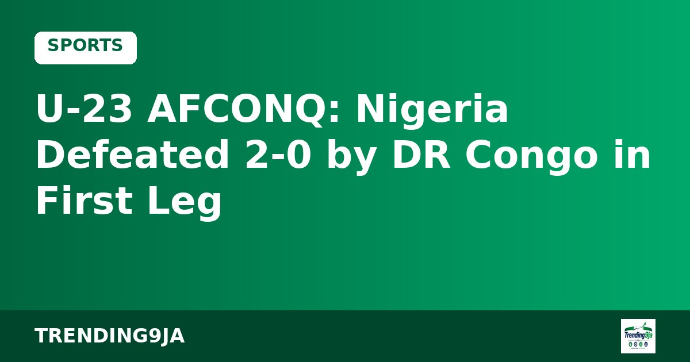

Cardiff Residents Oppose Late-Night License Extension For Fury-Joshua Clash
Cardiff residents have raised concerns over a plan to extend licensing hours until 3:30 am for the Tyson Fury versus Anthony Joshua fight, according to reports.

Nigeria's Under-23 national team, the Olympic Eagles, face a tough path to qualify for the 2027 U-23 Africa Cup of Nations after losing 2-0 to the Democratic Republic of Congo in their first-leg tie on Friday, according to Vanguard.
The Nigerian squad was handled by Ikorodu City manager Bright Osehai Ozebagbe alongside former national U-20 assistant coach Deniran Ortega. Vanguard reported that senior team boss Eric Chelle was absent due to preparations for the Super Eagles' Africa Cup of Nations match against Tanzania.
The Olympic Eagles started strongly but failed to capitalize on early chances. Victor Samuel missed the target in the fourth minute before failing to score another opportunity in a one-on-one situation five minutes later.
DR Congo capitalized on Nigeria's missed opportunities, opening the scoring in the 20th minute. The goal triggered controversy as goalkeeper Samuel James appeared to be challenged while gathering an aerial pass, but the referee upheld the decision.
Nigeria suffered further trouble when Brighton's Zadok Yohanna left the pitch injured in the 30th minute. Five minutes before half-time, Felozefe Mabete doubled the lead for the host nation by scoring from a free-kick.
Despite secondary efforts during the second half, the Olympic Eagles could not breach the home defense. The team will now attempt to overturn the two-goal margin when they host DR Congo at the Remo Stars Stadium on Tuesday. The U-23 AFCON serves as the qualifying path for the 2028 Los Angeles Olympic Games.
Sources: Vanguard
← More Sports storiesNigeria's trending news, politics and entertainment, straight to your email.
By subscribing you agree to our Privacy Policy. Unsubscribe any time.